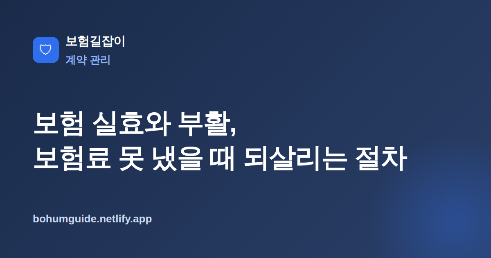

보험 실효와 부활, 보험료 못 냈을 때 되살리는 절차
보험료를 며칠 늦게 냈을 뿐인데 계약이 사라졌다면 당황스럽습니다. 실효가 무엇이고, 어떤 절차로 계약을 되살릴 수 있는지 순서대로 정리했습니다.

✍️ 편집자 참고: 본 글은 초안입니다. 납입최고 기간·부활 요건 등은 상품·약관마다 다르니 게시 전 최신 약관 기준으로 검수·수정해 주세요.
실효란 무엇인가
실효(효력상실)는 보험료를 정해진 날까지 내지 못해 계약의 효력이 정지되는 상태를 말합니다. 다만 하루라도 늦으면 곧바로 실효되는 것은 아닙니다. 대부분의 약관은 납입기일이 지나면 일정한 납입유예기간을 두고, 그 안에 보험료를 내면 계약이 그대로 유지되도록 하고 있습니다.
유예기간이 끝날 무렵이면 보험사는 계약자에게 납입최고(연체 사실과 실효 예정 안내)를 통지합니다. 이 안내에도 불구하고 기한 내에 보험료가 들어오지 않으면 계약은 실효 처리됩니다. 즉 흐름은 연체 → 납입유예 → 납입최고 안내 → 효력상실 순서로 이어집니다.
납입최고는 계약자를 보호하기 위한 절차이기도 합니다. 보험사는 일반적으로 실효 전에 서면이나 전자문서, 문자 등으로 연체 사실과 실효 예정일을 안내하도록 정해져 있습니다. 만약 이러한 안내가 제대로 이루어지지 않았다면 실효의 효력을 두고 다툼의 여지가 생길 수 있으므로, 안내를 받았는지 여부와 그 시점을 기록해 두는 것이 도움이 됩니다.
실효되면 벌어지는 일
계약이 실효되면 그 시점부터 보장이 중단됩니다. 문제는 실효 사실을 모르고 지내는 사이에 사고나 질병이 생기는 경우입니다. 이때는 계약이 살아 있지 않으므로 보험금이 지급되지 않을 수 있습니다. 실효는 단순한 연체 이상의 결과를 낳는 셈입니다.
특히 자동이체 계좌의 잔액 부족, 카드 유효기간 만료, 이사·연락처 변경으로 안내를 받지 못하는 경우 등 사소한 이유로 실효가 생기는 사례가 적지 않습니다. 본인은 계약이 유지되고 있다고 믿고 있는데 실제로는 보장이 끊겨 있는 상황이 가장 위험합니다. 그래서 보험료가 정상적으로 빠져나가고 있는지, 안내 문자를 받고 있는지 주기적으로 확인하는 습관이 필요합니다.
실효 상태의 사고는 보장되지 않을 수 있습니다
실효 기간 중 발생한 사고·질병은 원칙적으로 보장 대상이 아닙니다. 뒤늦게 부활을 하더라도 실효 기간에 생긴 일까지 소급해 보장되지는 않는 경우가 일반적이므로, 연체가 시작되면 최대한 빨리 조치하는 것이 안전합니다.
부활 절차
부활은 실효된 계약을 다시 살리는 제도입니다. 새로 가입하는 것보다 그동안 쌓인 조건을 이어갈 수 있어 유리한 경우가 많습니다. 다만 정해진 요건을 갖춰야 합니다.
일정 기간 내 신청과 연체분 납입
부활은 실효 후 약관에서 정한 일정 기간 내에 신청할 수 있습니다. 이때 밀린 연체보험료와 그에 대한 이자를 함께 납입해야 하며, 이자율과 기간은 약관에 따라 다릅니다.
부활청약과 심사, 고지의무 재이행
부활은 자동이 아니라 부활청약이라는 새로운 청약 절차를 거칩니다. 이 과정에서 고지의무를 다시 이행해야 하고, 보험사는 현재 건강 상태 등을 바탕으로 심사합니다. 신규 가입과 유사한 심사가 이루어진다고 보면 됩니다. 따라서 실효 이후 건강에 변화가 생겼다면 그 사실을 사실대로 알려야 하며, 이를 숨기면 나중에 보장에 불이익을 받을 수 있습니다.
부활은 이미 가입해 둔 계약의 예정이율·보장 조건을 그대로 이어갈 수 있다는 점에서, 같은 보장을 새로 가입하는 것보다 유리한 경우가 많습니다. 다만 심사 결과에 따라 부활이 승인되지 않을 수도 있으므로, 부활을 염두에 두고 있다면 실효 상태를 오래 방치하지 말고 요건이 남아 있을 때 서둘러 진행하는 것이 좋습니다.
| 구분 | 실효 | 부활 |
|---|---|---|
| 상태 | 보장 정지 | 보장 재개(승인 시) |
| 필요 조건 | 유예기간 내 미납 | 연체보험료+이자, 부활청약 |
| 심사 | 해당 없음 | 고지의무 재이행·심사 |
실전: 실효를 막는 방법과 부활 시 유의점
실효는 사후 부활보다 애초에 막는 편이 훨씬 낫습니다. 보험사들은 연체로 계약이 끊기지 않도록 여러 제도를 두고 있으니 미리 활용해 두는 것이 좋습니다.
- 보험료 자동이체를 걸어 납입 누락을 방지
- 사정이 어려울 때는 납입유예 제도를 상담
- 보장은 유지하되 부담을 줄이는 감액완납 검토
- 해지환급금 범위에서 보험료를 대신 내는 보험료 자동대출납입 활용
한편 부활을 할 때도 유의할 점이 있습니다. 부활 후에는 계약 초기와 마찬가지로 면책기간이나 감액지급 조건이 다시 적용될 수 있고, 그동안 건강이 나빠졌다면 심사 과정에서 부활이 거절되거나 일부 조건이 붙을 수 있습니다. 이는 고지의무와도 직결되는데, 관련 위험은 보험 고지의무 위반의 불이익에서 자세히 다룹니다. 또한 자동대출납입을 오래 쓰면 해지환급금이 줄어드는데, 그 구조는 해지환급금이 적은 이유를 참고하세요.
요약
실효는 연체가 유예기간과 납입최고를 거쳐 계약 효력이 정지되는 상태이고, 그 기간의 사고는 보장되지 않을 수 있습니다. 부활은 일정 기간 내에 연체보험료와 이자를 내고 부활청약·고지의무 재이행을 거쳐 계약을 살리는 제도이며, 면책·감액 재적용과 심사 거절 가능성을 함께 고려해야 합니다. 요건과 이자, 기간은 상품과 약관에 따라 달라지므로 반드시 본인 계약 기준으로 확인하시기 바랍니다. 가입 단계부터 꼼꼼히 점검하려면 가입 전 체크리스트가 도움이 됩니다. 무엇보다 실효는 예방이 최선이므로, 자동이체와 연락처를 최신 상태로 유지하고 안내 문자를 놓치지 않는 것만으로도 대부분의 실효를 막을 수 있습니다.
참고할 수 있는 공신력 있는 자료
- 금융감독원 — 금융·보험 소비자 보호 및 안내
- 금융소비자 정보포털 파인 — 보험 관련 공공 정보 조회
- 생명보험협회 — 생명보험 제도·약관 안내
본 정보는 일반적인 안내이며, 실효·부활 요건과 실제 처리는 각 보험사 약관과 전문가 상담을 통해 반드시 확인하시기 바랍니다.